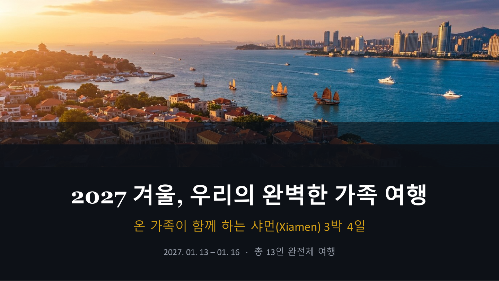

2027년 1월 7일 ~ 10일 · 가족 13명 · 인천 직항
厦门 Xiamen · 인천(ICN) → 샤먼(XMN) · 무비자 입국
가족에게 샤먼이 선정된 이유와 여행지를 소개하는 발표 자료입니다. 좌우 화살표로 넘겨보세요.

서철 신부님 1명
서미연 가족 ( 명)
서수정 가족 ( 명)
서호 가족 ( 명)
서륜 가족 ( 명)
총 13명 대가족 여행
중국 푸젠성(福建省)
샤먼(厦门, Xiamen)
세계문화유산 쿨랑위 섬 보유
2027.01.07(수) 출발
2027.01.10(토) 귀국
3박 4일
따뜻한 남방 해양도시
유럽풍 건축 + 중국 문화
신선한 해산물과 특유의 음식
| 날짜 | 오전 | 오후 | 저녁 |
|---|---|---|---|
| Day 1 1/7(수) |
✈️ 인천 출발 샤먼 도착·환전 |
🏨 숙소 체크인 ⛴️ 쿨랑위 첫 방문 |
🍜 중산루 사차면 저녁 |
| Day 2 1/8(목) |
⛴️ 쿨랑위 일찍 입도 🗼 일광암 등반 |
🎹 피아노박물관 🌺 숙장화원 산책 |
🌃 중산루 야시장 굴전·해산물 꼬치 |
| Day 3 1/9(금) |
🛕 남보타사 🎓 샤먼대학 캠퍼스 |
🌊 환도루 해안 ☕ 쩡쭈오안 카페거리 |
🚢 야경 유람선 (선택 프로그램) |
| Day 4 1/10(토) |
🛍️ 자유쇼핑 SM면세점·마트 |
🍽️ 마지막 점심 ✈️ 공항 이동 |
🏠 인천 귀국 약 2~3시간 25분 |
구글 마이맵 · 레이어별 마커 · 마커 클릭 시 상세정보
샤먼 대표 음식. 사차 소스 국물에 면·해산물·두부 등. 고소하고 진한 맛. 어르신도 무난하게 드심.
💴 8~15위안신선한 굴과 달걀을 볶은 샤먼식 굴전. 바삭한 겉면과 촉촉한 속. 포장마차·야시장에서 즉석 조리.
💴 15~25위안갯지렁이 추출물 묵. 특이하지만 콜라겐 풍부. 초간장에 찍어먹는 샤먼 별미. 모험적인 분께 추천!
💴 10~20위안찹쌀+돼지고기+계란+버섯을 대나무잎에 싼 만두. 든든한 아침식사로 인기. 달콤짭짤한 맛.
💴 10~15위안생강과 오리를 함께 찐 샤먼 전통 보양식. 몸을 따뜻하게 해줘 1월 겨울 여행에 최적. 깊고 진한 국물이 일품. 어르신들 특히 선호.
💴 60~100위안/인샤먼은 항구도시. 전복·새우·꽃게 등 초신선 해산물 레스토랑 풍부. 단체 식사에 적합한 대형 레스토랑 다수. 1인 3~5만 원이면 충분히 훌륭한 식사 가능.
💴 100~200위안/인돼지고기+야채를 두부껍질에 말아 튀긴 스낵. 오향 향신료의 독특한 맛. 중산루 야시장 필수 간식.
💴 5~10위안앱스토어/구글플레이에서 「Alipay」 설치 (한국 계정으로 가능)
한국 휴대폰 번호(+82) 사용 가능. SMS 인증코드 입력
여권 번호 + 여권 사진 촬영으로 외국인 인증 완료. 1~3일 소요될 수 있음
앱 내 「Tour Pass」 메뉴 → VISA/Mastercard 한국 카드 등록 → 충전 없이 직접 카드 결제
한국 내 알리페이 가맹점 또는 소액 결제로 사전 테스트 권장
알리페이 앱 열기 → 화면 QR코드 보여주기(소비자 QR) 또는 상점 QR 스캔
출발 1주일 전 가족 카톡방에서 설치 여부 확인. 어르신은 자녀가 도움 제공
평균 최고 17°C
평균 최저 10°C
아침저녁 쌀쌀
가벼운 패딩 필요
경량 패딩 or 두꺼운 후드
실내 난방 없는 곳 多
도톰한 잠옷 지참
편한 운동화 필수
지하철 1~4호선 운영
BRT 급행버스
디디(滴滴) 택시 앱
쿨랑위 페리 35위안
9시간 맞춤형 전세버스 이용 시
단체 이동 편의·단결력 ↑
트립닷컴 '프라이빗 투어'
1666-0060 (한국 고객센터)
※ 구랑위 섬 내부 차량 진입 불가
홍콩망 eSIM 추천 (VPN 불필요)
한국 통신사 로밍도 가능
현지 유심 20~30위안/일
카카오톡·구글 차단됨
경찰: 110
구급차: 120
소방: 119
한국총영사관: 0592-509-6280
220V (한국과 동일)
콘센트 모양 다를 수 있음
멀티 어댑터 1개 지참
보조배터리 필수
중국 = 한국 - 1시간
(한국 오전 10시 = 중국 오전 9시)
입국 시 시계 조정
쿨랑위 섬 내 게스트하우스
(풍경 최고, 사전 예약 필수)
샤먼 본섬 비즈니스 호텔
(교통 편리, 단체 대형 객실)